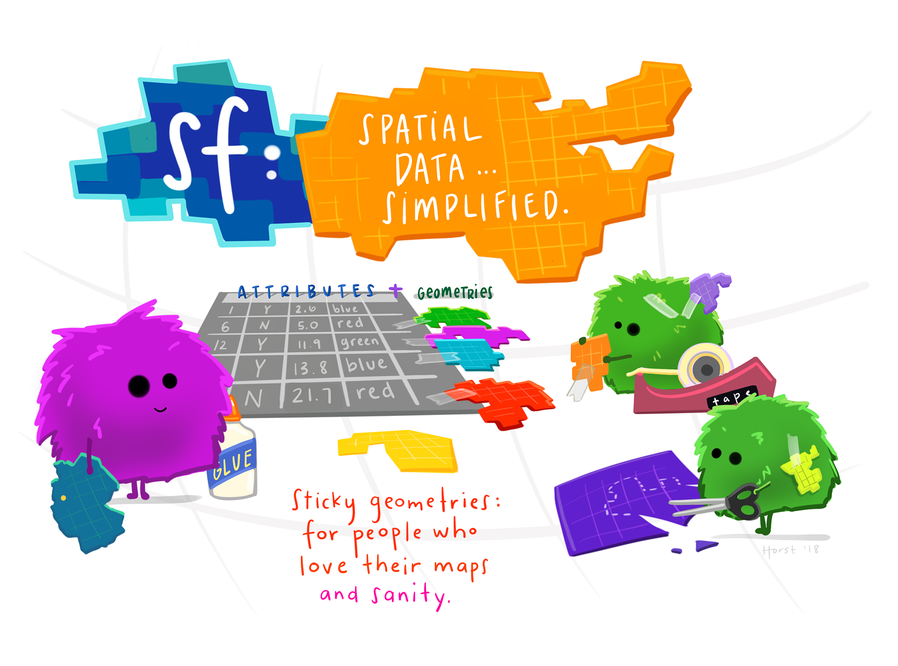
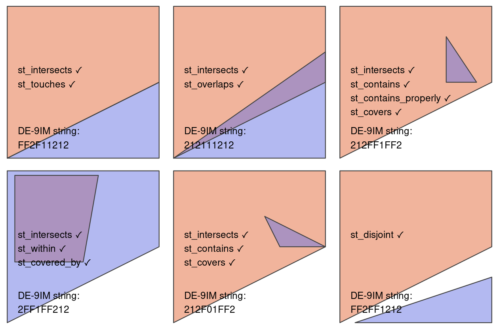
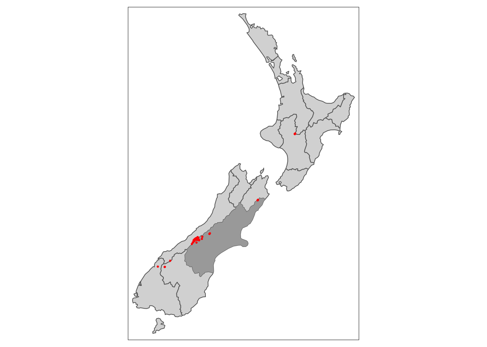
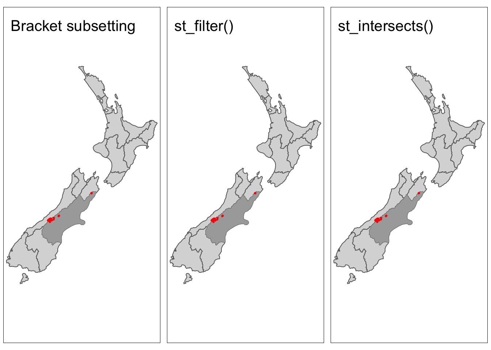
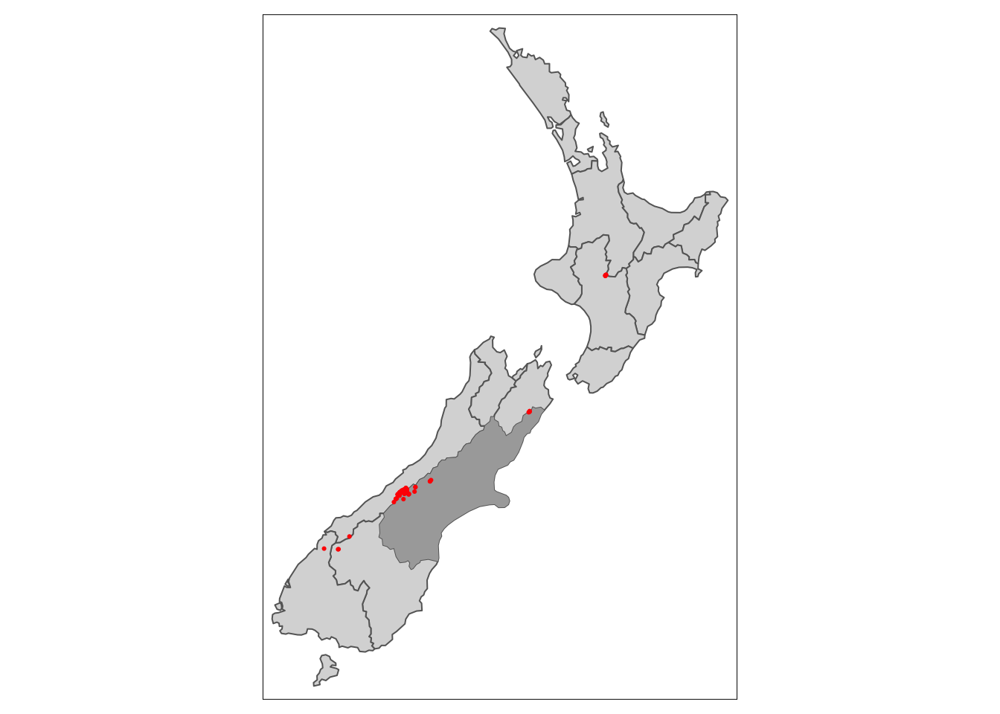

Artwork by Allison Horst
In this lab, we’ll explore the basics of spatial and geometry operations on vector data in R using the sf package.
Source Materials
Spatial data operations
Last week, we covered how the basics of the sf package. We saw that the magic of working with spatial data in the tidyverse means that we can leverage many of our favorite dplyr functions to manipulate the data attributes. So far, we’ve only worked with the data.frame component of sf objects. In this section, we’ll see how we can perform analogous operations using the geometry column.
1. Set Up
Let’s load all necessary packages:
library(sf)
library(tmap)
library(tidyverse)
library(spData)2. Spatial subsetting (filtering)
When working with tabular data, we have frequently found it useful to subset the data.frame we are working with based on some condition using dplyr::filter().

Artwork by Allison Horst
For example, last week we saw how we could filter to countries whose average life expectancy is greater than 80 years old using the following code:
world %>%
filter(lifeExp >= 80)Similarly, we might want to filter data based on its spatial relationships. In this case, we use spatial subsetting which is the process of converting a spatial object into a new object containing only the spatial features that relate in space to another object. This is analogous the attribute subsetting that we covered last week (example above).
Topological relationships
When filtering based on attributes, we use conditions (for example, lifeExp >= 80). In spatial subsetting, we use the relationships of objects to each other in space (topological relationships). These relationships are based on mathematical relationships, but can be more easily understood from visualizing them. The figure below shows how each relationship is satisfied.

st_intersects() and st_disjoint()
Note that st_intersects()is a “catch-all” that contains the following relationships:
st_touches()st_overlaps()st_contains()and st_contains_properly()st_covers()andst_covered_by()st_within()
st_disjoint() is the opposite of st_intersects()
Examples
There are many ways to spatially subset in R, so we will explore a few.
As an example we’ll work with the following two datasets from the spData package:
nz: polygons representing the 16 regions of New Zealandnz_height: top 101 heighest points in New Zealand
We’ll explore by trying to find all the high points in the region of Canterbury (shown in dark grey).

Bracket subsetting
Like attribute subsetting, the command x[y, ] (equivalent to nz_height[canterbury, ]) subsets features of a target x using the contents of a source object y. Instead of y being a vector of class logical or integer, however, for spatial subsetting both x and y must be geographic objects. Specifically, objects used for spatial subsetting in this way must have the class sf or sfc: both nz and nz_height are geographic vector data frames and have the class sf, and the result of the operation returns another sf object representing the features in the target nz_height object that intersect with (in this case high points that are located within) the Canterbury region.
# first filter to the region of Canterbury
canterbury <- nz %>%
filter(Name == "Canterbury")
# subset nz_heights to just the features that intersect Canterbury
c_height1 <- nz_height[canterbury, ]By default bracket subsetting will filter to features in x that intersect features in y. However, we can use other topological relationships by changing options.
nz_height[canterbury, , op = st_disjoint]st_filter()
The sf package also includes the function st_filter() which is analogous to dplyr::filter(). Using st_filter() we can perform spatial subsetting in the same format as using dplyr commands. The .predicate = argument allows us to define which topological relationship we would like to filter by (e.g. st_intersects(), st_disjoint()).
The results from this method are the identical to the method above.
# subset to the features in Cantebury
c_height2 <- nz_height %>%
st_filter(y = canterbury, .predicate = st_intersects) # define the topological relationshipTopological operators (st_intersects())
The previous two methods either by default or explicitly use the argument st_intersects. All topological relationships have their own topological operators which are functions that evaluate whether or not features meet the specified condition (e.g. st_intersects()). These operators can be used for spatial subsetting, but are more complicated to use.
The output of st_intersects() and other topological operators is a sparse geometry binary predicate list (yikes!) that’s a list that defines whether or not each feature in x intersects y.
This can be converted into logical vector of TRUE and FALSE values which can then be used for filtering.
# sparse binary predicate list
nz_height_sgbp <- st_intersects(x = nz_height, y = canterbury)
nz_height_sgbpSparse geometry binary predicate list of length 101, where the
predicate was `intersects'
first 10 elements:
1: (empty)
2: (empty)
3: (empty)
4: (empty)
5: 1
6: 1
7: 1
8: 1
9: 1
10: 1# convert to logical vector
nz_height_logical <- lengths(nz_height_sgbp) > 0
# filter based on logical vector
c_height3 = nz_height[nz_height_logical, ]Now let’s plot results from all three methods to confirm they gave the same results.
map1 <- tm_shape(nz) +
tm_polygons() +
tm_shape(canterbury) +
tm_fill(col = "darkgrey") +
tm_shape(c_height1) +
tm_dots(col = "red") +
tm_layout(title = "Bracket subsetting")
map2 <- tm_shape(nz) +
tm_polygons() +
tm_shape(canterbury) +
tm_fill(col = "darkgrey") +
tm_shape(c_height1) +
tm_dots(col = "red") +
tm_layout(title = "st_filter()")
map3 <- tm_shape(nz) +
tm_polygons() +
tm_shape(canterbury) +
tm_fill(col = "darkgrey") +
tm_shape(c_height3) +
tm_dots(col = "red") +
tm_layout(title = "st_intersects()")
tmap_arrange(map1, map2, map3, nrow = 1)
Distance relationships
The topological relationships we have been discussing are all binary (features either intersect or don’t). In some cases, it might be helpful to subset based on a distance to a feature. In these cases we can use the st_is_within_distance() to filter features. By default st_is_within_distance() will return a sparse geometry binary predicate list as in st_intersects() above. Instead, we can return a logical by setting sparse = FALSE.
# find heights within 1000 km of Canterbury
nz_height_logical <- st_is_within_distance(nz_height, canterbury,
dist = units::set_units(1000, "km"), # set distance
sparse = FALSE) # return logical vector instead
c_height4 = nz_height[nz_height_logical, ] # filter based on logicalNow, we should see points appear that do not intersect Caterbury, but are within 1000 km.
# additional high points should appear
tm_shape(nz) +
tm_polygons() +
tm_shape(canterbury) +
tm_fill(col = "darkgrey") +
tm_shape(c_height4) +
tm_dots(col = "red")
3. Spatial joins
Joins are a common way to link different data sources. Up until now, we have been performing joins using common attributes between data.frames. Last week, we saw that the same joins can be used on sf objects. However, we can also perform joins by using the spatial relationship of datasets.
First, let’s remind ourselves of the different types of joins.

Let’s consider the scenario where we would like to know which region each of the highest points is located in. We can left join the nz dataset (polygons of NZ’s regions) onto the nz_height dataset (points of highest points in the county).
nz_height_left_join <- st_join(nz_height, nz) %>%
select(id = t50_fid, elevation, region = Name)
head(nz_height_left_join)Simple feature collection with 6 features and 3 fields
Geometry type: POINT
Dimension: XY
Bounding box: xmin: 1204143 ymin: 5048309 xmax: 1389460 ymax: 5168749
Projected CRS: NZGD2000 / New Zealand Transverse Mercator 2000
id elevation region geometry
1 2353944 2723 Southland POINT (1204143 5049971)
2 2354404 2820 Otago POINT (1234725 5048309)
3 2354405 2830 Otago POINT (1235915 5048745)
4 2369113 3033 West Coast POINT (1259702 5076570)
5 2362630 2749 Canterbury POINT (1378170 5158491)
6 2362814 2822 Canterbury POINT (1389460 5168749)Now we could use this data to summarize the number of highest point in each region!
nz_height_left_join %>%
group_by(region) %>%
summarise(n_points = n()) %>%
st_drop_geometry()# A tibble: 7 × 2
region n_points
* <chr> <int>
1 Canterbury 70
2 Manawatu-Wanganui 2
3 Marlborough 1
4 Otago 2
5 Southland 1
6 Waikato 3
7 West Coast 22